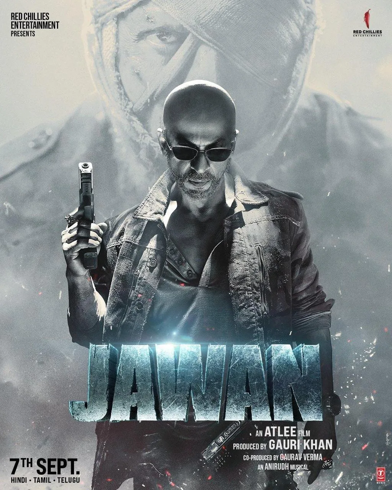
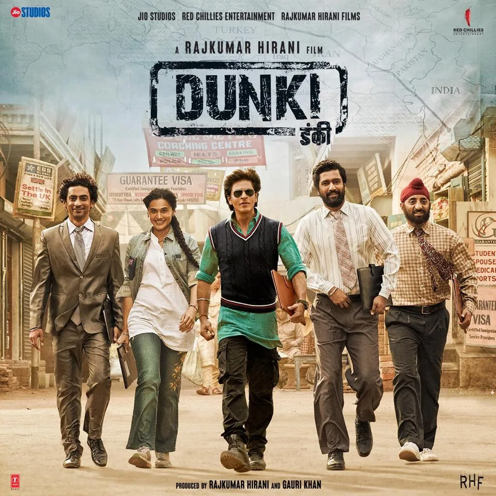

The Final Thesis · section 62 of 92
PART IV — THE RESURRECTION
7. 2023: Three films. Three campaigns. One cultural eruption.



5
The year 2023 changed the scale of the box-office conversation around Shah Rukh Khan.
The worldwide gross estimates in Bollywood Hungama's dataset are:
The 2023 box-office eruption
Pathaan
25 January 2023
₹1,050.30 cr
Jawan
7 September 2023
₹1,148.32 cr

Dunki
21 December 2023
₹470.60 cr
Combined reported gross
₹2,669.22 cr
Bollywood Hungama worldwide gross estimates. These are trade figures and not audited producer receipts.

Bollywood Hungama
The combined figure of approximately ₹2,669 crore describes the scale of the three releases in this dataset. It does not isolate the contribution of digital marketing, acting, content, distribution, exhibition, or audience demand.
The more interesting question is how three very different films could sustain a single year of extraordinary attention.
Pathaan: The return of the action icon
Pathaan reintroduced Shah Rukh Khan in an action-led theatrical event, with the campaign built around the film's action identity, music, visual reveals, star appearances and the broader YRF Spy Universe.
The film's release became a major public event, with extensive media coverage and audience discussion.
For the case study, the relevant comparison with Ra.One is the management of anticipation. Both films used the recognisable star as a central promotional asset, but the technological and distribution environments were different.
In 2011, a bespoke website, game, graphic novel and physical merchandise were prominent campaign components.
By 2023, social platforms, online video, streaming distribution and fan-created edits operated at a vastly different scale.
The final paper should measure those differences through dated campaign assets and available platform data, rather than treating the volume of online conversation as a direct measure of unique audience reach.
Jawan: Multiple identities, multiple conversations
Jawan built its promotional identity around multiple looks, action imagery, character reveals, music and the visual spectacle of Shah Rukh Khan in contrasting roles.
The film also generated discussion around its social and political themes.
That discussion needs to be analysed carefully. Press coverage, critical reviews, social-media responses and the film's commercial performance are distinct forms of evidence.
A film may generate a large volume of conversation without every participant agreeing about its themes, quality or meaning.
The campaign's ability to sustain attention across several promotional assets is a subject worth investigating in its own right.
Dunki: A different register
Dunki followed with a different genre and creative partnership: Shah Rukh Khan and director Rajkumar Hirani, in an emotional story involving migration and belonging.
Its reported worldwide gross was lower than those of Pathaan and Jawan, but it remained a substantial theatrical release in the same calendar year.
The three-film sequence demonstrates that the 2023 story was not confined to a single action-film identity.
It encompassed action spectacle, multi-character performance and a different emotional register.
The research question is whether this represented a deliberate diversification of the star's public-facing brand, a consequence of the projects themselves, or a combination of creative and commercial factors.
The available public data cannot establish a single cause.
8. Keeping the audience, press and critics on their toes
The post-2021 narrative has a distinctive rhythm.
A period of limited public communication was followed by a series of highly visible film campaigns, each with its own visual identity, release cycle, creative collaborators and public conversation.
The phrase "keeping the audience, press and critics on their toes" captures the author's interpretation of that rhythm.
To make it publishable, the final research should turn the phrase into a documented media chronology.
| Evidence category | What the case study should record |
|---|---|
| Audience | Dated fan trends, official trailer views, platform engagement and documented audience reactions. |
| Press | Headlines, interviews, release announcements and major changes in coverage over time. |
| Critics | Review publication dates, critical responses and the distinction between reviews of the film and commentary on the star's career. |
| Campaign | Official trailers, songs, posters, appearances, interviews, partnerships and release announcements. |
| Commercial | India and worldwide grosses, release scale and source-specific trade estimates. |
This distinction prevents a common analytical error: using a box-office result as proof that every element of the campaign worked.
It also gives the paper an opportunity to measure something more useful than raw impressions.
How long can a film property sustain meaningful audience attention before release, and what types of content generate that attention?
That question can be applied to Ra.One, Chennai Express, the 2014–2018 releases, the 2023 films and KING.
It is a comparison that could be useful to entertainment marketers beyond the Shah Rukh Khan case.